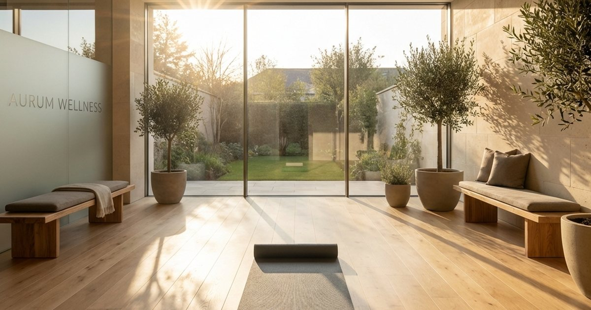

身體節奏的重整，最怕被做成另一個高壓計畫。當工作、家庭、旅行與居家任務都擠在同一天，很多人會把睡眠、伸展、補水、飲食與恢復放到最後，直到疲勞變成明顯卡關才回頭處理。這個 hub 的目的，是把身體照顧從抽象口號拉回日常順序：什麼先做，什麼可以晚一點，哪些用品只是輔助，哪些習慣才是真正影響生活品質的核心。
Elite Fashion 編輯團隊觀察到，讀者最常遇到的不是不知道健康重要，而是不知道怎麼在忙碌生活裡安排。晚上太熱、久坐肩頸緊、出差後睡眠亂掉、家中照護用品沒有位置、低壓運動總是被取消、飲食補給被活動與庫存牽著走，這些問題都不是單靠意志力能解決。比較可靠的做法，是把身體訊號當成生活設計的一部分，讓環境、時間與物品配置一起幫你降低阻力。
本頁的閱讀順序可以從睡眠與恢復開始。睡眠不是一天結束時才發生的事，白天咖啡因、晚餐時間、室內溫度、光線、工作收尾方式與床邊物品，都會影響夜間品質。若你常在季節轉換、旅行移動或高壓專案後覺得身體跟不上，先檢查睡眠與恢復窗口，比先追求更完整的運動菜單更實際。
接著再看肌力、久坐與低門檻活動。行動力不是只屬於健身房，而是每天從椅子站起來、提東西、爬樓梯、走一段路、搬行李、整理家裡時會用到的能力。若把運動想成必須一次完成的大型任務，就很容易延後；若把它拆成十分鐘伸展、上下班步行、睡前放鬆與週末恢復，反而更容易持續。這也是本站寫身體照顧時最在意的取捨：先讓身體願意開始，再慢慢談強度。
在台灣生活裡，身體節奏也會被天氣與居住空間影響。濕熱、冷氣、窄小浴室、通勤時間、辦公室久坐與連假移動，都會讓用品與習慣的選擇不同。涼感寢具、靠墊、按摩工具、耳塞、補水用品、簡單備餐或小型伸展角落，都不應只是商品清單，而要回到你家裡的使用位置、清潔方式與收納邊界。買得越多不一定越健康，真正能被反覆使用的才有意義。
如果文章涉及食品、護具、照護、睡眠或身體不適，我們會保留必要的限制語氣。一般生活媒體不應承諾療效，也不應把用品寫成醫療替代方案。你可以把這些文章視為生活檢查表：先觀察、再調整環境與頻率，最後才決定是否需要添購或尋求專業協助。身體節奏不是追求完美，而是讓自己每天少一點硬撐，多一點可以恢復的空間。
若只能先做一件事，請從最常重複發生的卡點開始。有人是睡前滑手機太久，有人是辦公椅與桌高不合，有人是出差後沒有恢復日，也有人是用品散在各處，真正使用時反而找不到。把卡點寫下來，再選對應文章，比一次追求完整健康計畫更容易成功。
文章路徑
依照現在最需要處理的任務，選一篇開始即可。
FAQ
先確認閱讀順序，再進入文章細節。
身體恢復應該先從運動還是睡眠開始？
若已經長期疲勞，先穩住睡眠、補水、溫度與恢復窗口，再慢慢加入低門檻活動。
文章裡的用品可以直接當健康建議嗎？
不可以。用品只是生活配置參考，任何持續不適、用藥、復健或照護問題，都應諮詢合格專業人員。
沒有時間運動怎麼辦？
先把活動拆小，例如十分鐘伸展、走路、站立休息或睡前放鬆，讓身體先有可重複的節奏。